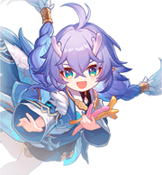
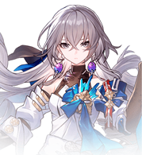
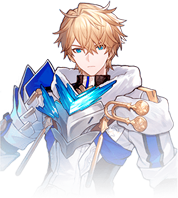
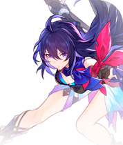
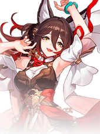
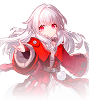
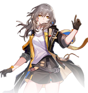
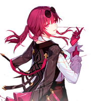

-
Bailu #001

- Elemento Raio
- A Abundância
Bailu é um dos personagens do elemento Raio em Honkai Star Rail. Como Abundância, Bailu atua como curador e ajuda a equipe a se manter saudável.
-
Bronya #002
- Elemento Vento
- A Harmonia
Bronya é um dos personagens do elemento Vento em Honkai Star Rail. Como Concard, Bronya apóia o time aplicando buff ao time.
-
Gepard #003
- Elemento Gelo
- A Preservação
Gepard é um capitão honesto e nobre dos Guardas Silvermane que leva o nome da antiga família Gepard. Na cidade de Belobog, atingida pela nevasca, a defesa é muito mais desafiadora do que o ataque. Gepard e os Guardas Silvermane que ele lidera servem como a defesa de ferro inquebrável da União neste mundo hostil.
-
Seele #004
- Elemento Quantum
- A Caçada
Seele é um membro espirituoso e valente do Wildfire que cresceu no perigoso submundo de Belobog. Ela está acostumada a ficar sozinha. Como alguém que antes dependia de outros para proteção, ela agora busca força. Pela verdade do underground e pelo nome de sua família, a Seele pode suportar qualquer tipo de adversidade.
-
Tingyun #005
- Elemento Raio
- A Harmonia
Tingyun é o representante principal da Whistling Flames, uma guilda mercantil que é oficialmente aprovada pela Sky-Faring Commission em Honkai Star Rail. Como uma garota Foxiana de língua eloquente, ela tem um dom notável para as palavras e para contar histórias. Suas histórias cativantes muitas vezes deixam seu público ansioso por mais, tornando-a uma figura popular entre as feiras comerciais de Xianzhou
-
Clara #006
- Elemento Físico
- A Destruição
Clara é um dos personagens do elemento físico em Honkai Star Rail. Como a Destruição, Clara atua como o Atacante de alvo único. Eles danificam é mais explosivo do que outros. Clara é uma personagem importante no universo simulado. Ela tem a capacidade de usar Bênçãos para ajudar sua equipe a alcançar a vitória com mais facilidade.
-
Jing Yuan #007

- Elemento Raio
- A Erudição
Jing Yuan é um dos personagens do elemento Lightning em Honkai Star Rail. Como a Erudição, Jing Yuan atua como um atacante AOE.
-
Himeko #008

- Elemento Fogo
- A Erudição
Uma cientista aventureira que encontrou o Expresso Astral quando jovem, quando ele ficou preso em seu mundo natal. natal. Naquela época, alguma existência no Expresso revelou a essa jovem um mundo inteiro fora dela - o universo. Anos depois, Himeko finalmente consertou o trem e iniciou sua jornada para as estrelas, mas percebeu que isso era apenas o começo. No caminho Trailblaze, ela precisaria de muito mais companheiros... Mesmo que tais companheiros possam ter destinos diferentes em mente, todos eles olham para o mesmo céu estrelado.
-
Trailblazer #009
- Elemento Físico
- A Destruição
Em Honkai: Star Rail cada jogador é chamado de Trailblazers, e em Honkai: Star Rail existem 2 personagens Trailblazers (masculino e feminino).
-
Kafka #010
- Elemento Raio
- A Nihilidade
Kafka é um dos personagens do elemento Lightning em Honkai Star Rail. Como um Nihility, Kafka neutraliza seus inimigos e ganha uma vantagem ao reduzir o poder de batalha geral do inimigo..